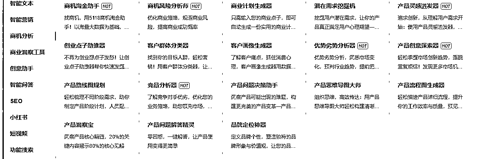
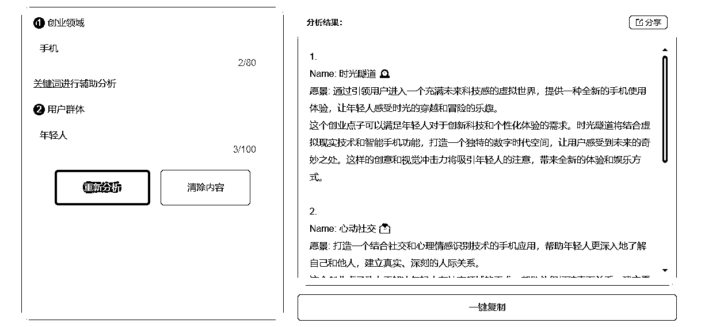
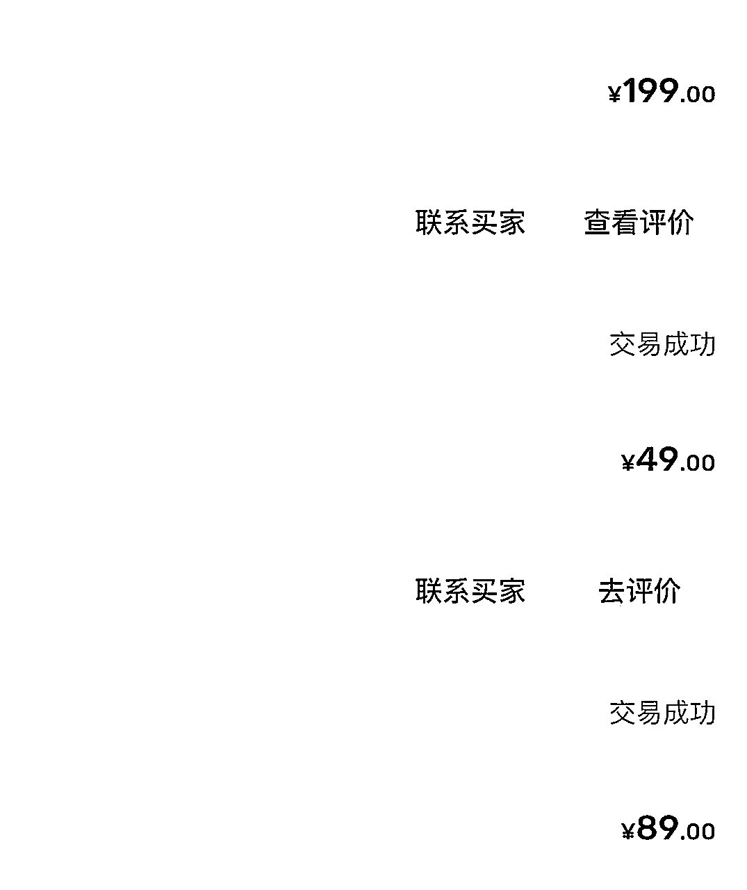
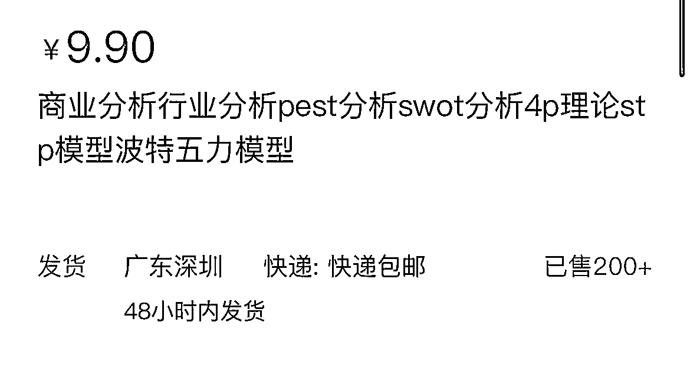

来源：https://opkmy65iz4.feishu.cn/docx/GiOQdk0hfoO5fkxR2dOcuCV3nRg
我是一名普通的青年，学历普通，经验普通，家境普通，自小就生活在农村，辍学后就去亲戚的眼镜店上班，处于一个比较封闭环境，每天都是接触跟眼镜相关的信息，对于外界跟其他行业发展信息知之甚少，一次偶然的机会，加入生财才慢慢扩展了自己的信息圈子。知识付费跟混圈子是普通人改变最快的路径，从你每天获取的信息开始改变你的人生。
Ai代写收入：15000+
以前因为有做自媒体，在AI还没普及的时候就开通了5118会员，在chatgpt出来后，没多久就发现5118上架一个商业分析的功能：包括创业点子、优劣势分析、用户画像、PEST框架分析等等关键词，我就尝试去闲鱼上架这个服务。

上架第一天就发现有人来咨询了，由于一开始没经验，就随便报了个价格可能10块钱，然后把关键词跟需求输入5118的列表里面，简单筛查一下，觉得没问题就发给客户，过程还是比较简单的。

一开始是尝试闲鱼，发现需求很旺，一天咨询的人虽然只有7-8个，但个别单价高，有的一单有200，那时候一天一个号基本有200-300收入，维持了大概半个月左右，可惜后面被闲鱼下了链接，说关于学术之类，这一点现在各平台做代写都会尽量避免敏感词了。

先从其中一个细分领域开始做，毕竟激励竞争，还有一个好处，在足够小的细分领域你有机会做成一个小IP，让用户去转介绍跟建立影响力。要有长期运营的打算，不要想一时之利，内容交付不能马虎。
转战淘宝，淘宝感觉宽松一点，不过淘宝新店流量比闲鱼真的差很多，到目前为止我也没怎么去弄他，都是靠淘宝自然流量。闲鱼真的很适合新手去玩，抓到一个品类卖的好，要学会矩阵，多搞几个号，说不定过阵子就被官方封了，先把钱赚到口袋里。

以上就是大概做Ai代写的过程，通过5118网站切入一个细分领域，在由各平台发布内容接单，最后通过Ai写作完成交付，Ai写的终究有些死板，需要检查稍微做一些修改，一些首先.....其次......最后等等格式，一系列格式让人一眼就看出是Ai写的。后悔当初没有把这个代写当回事，觉得这个市场小，没去扩大经营，也没去做更多的市场，导致错失了做大的机会。
习惯接触新词并搜索，我的第一桶金就是看到5118中的关键词，一开始先去闲鱼看有没有做这个服务，发现只有一两家，就上架尝试，过程前面有介绍了。由关键词衍生的服务，后面在一步一步通过客户去了解背后需求跟交付，一点点打磨。每一个关键词你都能当成一个服务或者教程那样去打造。
要估算市场规模，大概估算用户数x付费x单价，自己能触达的用户，大概做一个月也能摸到这个规模，要是触达的用户实在有限，自己能达到业绩估计也是可观的，就得早做打算了，是把这个打造成项目卖还是多做一些市场。
Ai绘画收入：1000+
Mj刚比较火的时候，也是通过淘宝买了一个共享号19块钱一个月，然后通过给别人跑图9.9/5次，也赚了一些钱，不过确实也是辛苦跟麻烦，要跟客户沟通跟关键词表达，后面也是直接放弃了。
一部分是通过吴东子的教程，一开始的SD做文字背景项目，也是通过淘宝、小红书等平台展示吸引客户，并成交，没有坚持太久，也只是赚一点小钱。
以上也是一些简单的，可以赚点小钱的操作思路，新软件出来的时候，很多人都想尝试玩一下，不想去开一个月，甚至更长的时间，这时候可以去租个共享跟充值个号，做服务也可以租号出去，都是最简单赚钱方式。
通用大模型可能只是开始，最后的小模型跟行业模型才是商业的一个目的，我做为一个门外汉的思考，也可能是对Ai肤浅的认识。
我在想我一直站在Ai有多么强大，多么方便，能做多少活的角度去看，是不是错了，是不是应该换个角度去看，企业的角度，实用的角度，个人的角度等等。
Ai也算一个大门类，关于普通人如何通过Ai去赚钱，一定要落实到一些细分领域上。
Ai做图细分有做头像、壁纸等娱乐类，有做产品图、效果图、建筑装修图等商业类需求；
Ai文字也同理继续分文章跟论文类的，交付给平台还是个人等。普通人想通过Ai搞钱一定要做细分在细分。
Ai绘画的COMfyUI的工作流方式我觉得是符合企业或者ai的高效率工作方式，ai写作现在好像也可以搭建工作流形式。搭建辛苦不过流程搞定了，只需要一个指令就能搞定，才是ai工作流+RPA才是值得研究的方向。
在今天，互联网一天生产的内容，我们花一辈子都看不完，选择性去看，建立一个指标，一般只关注这个指标相关的内容，比如Ai具体场景的应用，做为一个非程序员想通过Ai赚钱，去学习大数据，大模型，算法，道路太长远，
多关注自己能上手做的事。
以前看课程听过一句话感觉对我挺有帮助的分享一下：你在什么优势都没有的情况下，想通过标准的方式战胜比你厉害的对手，大概率会输，学会耍流氓，用非标准的方式去跟他玩。